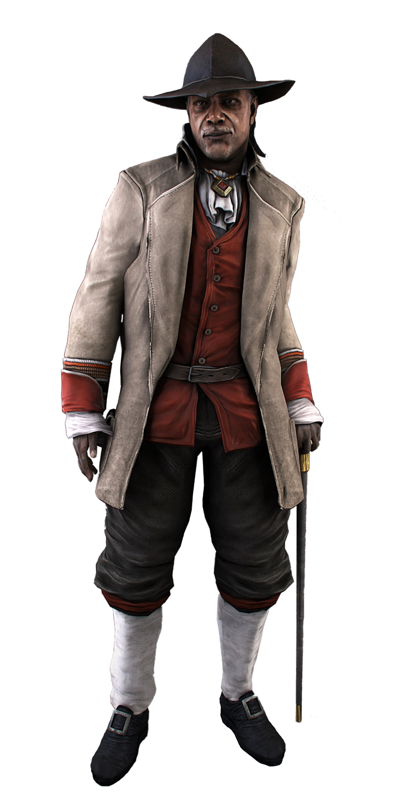

Радунхагейду, позже получил имя Коннор Кенуэй, в честь покойного сына наставника — американского ассассина Ахиллеса Дэвенпорта. Жил в колониальной Америке конца 18-ого века во время Войны за независимость США. Является одним из предков Дезмонда Майлса. Родился от английского тамплиера Хэйтема Кенуэя и индейской матери Гадзидзио. В один теплый день он, вместе со своими друзьями, убежал играть в прятки к лесу. Веселье длилось недолго, т. к. через некоторое время его схватили Тамплиеры под руководством Чарльза Ли. Ли начал душить и унижать его, говоря: Ничтожество, прах под ногами ты и весь твой народ. Ещё немного и Коннор был бы мертв, но избежав этой участи, он пообещал отомстить. После этого он убежал в деревню, где полыхал пожар. Было подозрение, что именно они подожгли деревню и дом Коннора. Мальчик пытался спасти маму, но не смог ― она сгорела заживо. Один из соплеменников забрал маленького Радунхагейду в другую деревню. Радунхагейду оставался в своей новой деревне до 1769 года, но его всегда волновал вопрос, почему его племя не покидало долину, в которой они жили. В 14 лет Мать Рода дала ответы на некоторые его вопросы. Она показала Радунхагейду Хрустальный шар, который является великой тайной и должен быть скрыт их племенем. По справке из Анимуса - это было ещё одна Частица Эдема. Радунхагейду дотронулся до шара, услышал голос Юноны и погрузился в иллюзию. Юнона придала ему вид орла, который летел сквозь туманы. Она рассказала ему о Тамплиерах, об их планах по захвату мира и необходимости борьбы с ними. Для этого Радунхагейду необходимо найти учителя, который мог бы обучить его. Очнулся он уже на берегу реки и сразу после этого нарисовал символ ассассинов на песке. На это обратила внимание Мать Рода и спросила, где мальчик видел этот символ. Он рассказал, что дух показал ему это, тогда Мать отправила его в поместье на востоке и дала официальное разрешение покинуть долину.
Ахиллес Дэвенпорт - ассассин британско-карибского происхождения, наставник Коннора Кенуэя. Жил во время американской революции. Проживал в собственном поместье. Вступил в ряды ассасинов в середине 1730-х и стал наставником в 1746. У него был дар одновременно и к вербовке, и к командованию, поэтому довольно скоро возглавил группу ассасинов, которая расселилась по колониям и большей территории Фронтира. Также укрепил связи между Орденом и племенами конфедерации ирокезов, особенно Ганьягэха. В 1752 году был наставником ассасина Шэя Кормака, а также и других колониальных ассасинов. В это время влияние Ордена продолжало расти. В 1755 году Шей Кормак решил проверить святыню Предтеч в Лиссабоне в надежде найти там Частицу Эдема. Артефакт вызвал землетрясение, в результате которого погибли тысячи мирных жителей. Шей в ярости приходит к наставнику, однако Ахиллес и другие ассасины не поверили ему и выгнали из своего дома. Разочарованный Шей решает все исправить, украв манускрипт. Ахиллес заметил Шея, между ними завязалась драка, а затем Шей попытался сбежать. Ассасины загнали Шея к обрыву, и Ахиллес потребовал прекратить все дерзкие выходки и отдать манускрипт. Шей заявляет, что тогда всё повторится, и прыгает с обрыва, заодно получив пулю от Лайама (как позже выяснилось, это был Шевалье). В 1756 году Шей просыпается в Нью-Йорке у пожилой пары Финнеганов, спасших и приютивших его. После этого к ним домой приходят ассасины, требуя отдать им Шея. Шей спасает Финнеганов от налетчиков. В качестве благодарности они преподносят ему одежду и доспехи своего покойного сына-тамплиера. Шей допрашивает ассасинов и захватывает их базу. После этого район переходит по контроль Британских войск, один из которых, полковник и тамплиер Джордж Монро, предлагает дружбу Шею. Не доверяя полковнику, он тем не менее соглашается и даже начинает на него работать, убивая всех ассасинов, которых когда-то считал своими братьями.
Ахиллес Дэвенпорт - ассассин британско-карибского происхождения, наставник Коннора Кенуэя. Жил во время американской революции. Проживал в собственном поместье. Вступил в ряды ассасинов в середине 1730-х и стал наставником в 1746. У него был дар одновременно и к вербовке, и к командованию, поэтому довольно скоро возглавил группу ассасинов, которая расселилась по колониям и большей территории Фронтира. Также укрепил связи между Орденом и племенами конфедерации ирокезов, особенно Ганьягэха. В 1752 году был наставником ассасина Шэя Кормака, а также и других колониальных ассасинов. В это время влияние Ордена продолжало расти. В 1755 году Шей Кормак решил проверить святыню Предтеч в Лиссабоне в надежде найти там Частицу Эдема. Артефакт вызвал землетрясение, в результате которого погибли тысячи мирных жителей. Шей в ярости приходит к наставнику, однако Ахиллес и другие ассасины не поверили ему и выгнали из своего дома. Разочарованный Шей решает все исправить, украв манускрипт. Ахиллес заметил Шея, между ними завязалась драка, а затем Шей попытался сбежать. Ассасины загнали Шея к обрыву, и Ахиллес потребовал прекратить все дерзкие выходки и отдать манускрипт. Шей заявляет, что тогда всё повторится, и прыгает с обрыва, заодно получив пулю от Лайама (как позже выяснилось, это был Шевалье). В 1756 году Шей просыпается в Нью-Йорке у пожилой пары Финнеганов, спасших и приютивших его. После этого к ним домой приходят ассасины, требуя отдать им Шея. Шей спасает Финнеганов от налетчиков. В качестве благодарности они преподносят ему одежду и доспехи своего покойного сына-тамплиера. Шей допрашивает ассасинов и захватывает их базу. После этого район переходит по контроль Британских войск, один из которых, полковник и тамплиер Джордж Монро, предлагает дружбу Шею. Не доверяя полковнику, он тем не менее соглашается и даже начинает на него работать, убивая всех ассасинов, которых когда-то считал своими братьями.